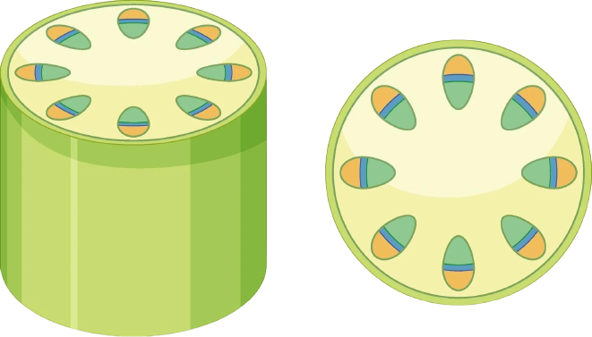

Una de las dos grandes ramas del reino vegetal comprende las plantas vasculares inferiores. Estas se caracterizan por carecer de flores, y por tanto, de semillas. Se reproducen por medio de esporas, de manera que también son conocidas como esporofitas.
Las pteridofitas generalmente, helechos y afines se pueden definir como traqueofitas con alternancia de generaciones bien manifiesta, donde el esporófito es un cormo primitivo, que posee vástago con tallo y generalmente también hojas (microfilos o megafilos), y raíces siempre adventicias, con xilema primitivo compuesto por traqueidas, y floema primitivo compuesto por células cribosas, el xilema y el floema formando haces vasculares ubicados en un cilindro central rodeado de la corteza primaria o endodermis, rodeada de epidermis con cutícula y estomas, que se mantiene a lo largo de toda la vida del esporófito; sin crecimiento secundario; con esporas como unidad de dispersión que persiste por siglos, formadas en eusporangios o leptosporangios; donde el gametófito es un talo (cuerpo sin organización), en él se forman los arquegonios (órgano sexual pluricelular que originará la gameta femenina inmóvil), y los anteridios (órgano pluricelular donde se formarán las gametas masculinas móviles flageladas), siendo la fecundación dependiente del agua; con un embrión que se desarrolla sobre el gametófito directamente después de la formación del cigoto y que no entra en latencia, que puede ser bipolar y con suspensor si proviene de un eusporangio (posee el meristema apical y el radical que después no se desarrolla) o unipolar (si proviene de un leptosporangio solo posee el meristema apical); el embrión crece sobre el gametófito sin ser liberado, dará el vástago con raíces adventicias.
Una espora, al germinar, da origen a un gametofito, se le denomina como prótalo. Este es generalmente es bisexual, y está provisto tanto de anteridios (gametangios masculinos) que producen gametos flagelados (anterozoides); como de arquegonios (gametangios), donde se desarrollan los gametos femeninos, denominados oosferas. Los anterozoides se movilizan hasta los arquegonios y fecundan a las oosferas, así dan origen, primero a un cigoto y luego, a un esporofito.
Normalmente, al hablar de plantas nos referimos a aquellas plantas vasculares que se pueden reproducir por semillas, pero existen otras plantas sin semillas pero que también son vasculares, es la división pteridophyta. Las pteridofitas son un grupo de plantas de gran importancia en la vida de los seres humanos desde hace unos 400 millones de años. Las pteridofitas son plantas vasculares perennes, sin crecimiento secundario y que no generan semillas durante sus ciclos vitales, sino que se reproducen mediante esporas. Las pteridofitas actuales comprenden cerca de 12000 especies que crecen principalmente en áreas tropicales con diversidad de ambientes, y en áreas montanas húmedas.
Las pteridofitas son plantas vasculares perennes, sin crecimiento secundario y que no generan semillas durante sus ciclos vitales, sino que se reproducen mediante esporas. Las pteridofitas actuales comprenden cerca de 12000 especies que crecen principalmente en áreas tropicales con diversidad de ambientes, y en áreas montanas húmedas.
Popularmente se conocen con el nombre de cola de caballo. Poseen un rizoma subterráneo del que salen una gran cantidad de recortes aéreos. Las hojas y tallos de las colas de caballo son huecos y fáciles de determinar respecto a sus parientes fósiles, ya que poseen crestas características que las diferencian de otras subespecies.
Estas plantas han sido empleadas a lo largo de la historia con diversos fines. Uno de ellos se debe a su alto contenido en sílice, perfecto para ayudar a pulir madera y otros metales. También cuenta con propiedades medicinales gracias a diversos principios activos y, en los últimos años, como plantas ornamentales por su curiosa forma y apariencia primitiva.
Los equisetos presentan un rizoma articulado del que brotan tallos huecos aéreos y articulados con nudos y entrenudos muy diferenciados. Incluso, llegan a presentar ramas verticiladas dispuestas lateralmente. Alrededor de los nudos de los tallos aparecen los micrófilos u hojas reducidas. Debido a estas formas largas, a las plantas equisetos se les conoce comúnmente como cola de caballo.
Son plantas sin flores que cuentan con un tallo hueco y articulado. Los equisetos cuentan con dos tipos de tallos, uno simple y otro fértil. El fértil es que recuerda a la forma de un espárrago largo, de ahí que se le conozca comúnmente como cola de caballo. El tallo infértil es el que cuenta con ramificaciones. Los equisetos se reproducen por esporas, al igual que sucede con otras plantas primitivas, como es el caso de los helechos. Sin embargo, también pueden propagarse por división rizomática. Su época de maduración es en verano, concretamente entre los meses de junio y julio.
son plantas vasculares pertenecientes a las Pteridophyta o plantas pteridofitas. Las plantas pertenecientes a esta clasificación se caracterizan, principalmente, por presentar esporófilos: hojas con una estructura singular que producen esporas para la reproducción de los licopodios. La reproducción sexual de estas plantas depende del agua. Te recomendamos aprender más consultando este otro artículo sobre La reproducción de las plantas.. El hábitat de los licopodios es bastante amplio: desde grandes urbes a pequeños y densos bosques. Estas plantas no requieren de cuidados muy específicos, solo necesitan un lugar húmedo, con mucha sombra y un suelo rico. Por lo general, los licopodios disponen de tallos de tipo rastrero o erecto. Además, estos cuentan con ramificación dicotómica y tejido vascular en el centro del mismo. En el caso de las hojas, de pequeño tamaño, se colocan de distintas formas sobre tallo. También es importante saber que varias especies de licopodios tienen propiedades medicinales que van desde el alivio y curación de quemaduras hasta su uso contra la aparición y eliminación de cálculos renales.
Una de sus características principales es que disponen de traqueidas, que utilizan para conducción de agua. Este es uno de los sistemas vasculares más primitivos que se conservan aún en nuestros días dentro del reino vegetal. Pueden llegar a alcanzar hasta 30 cm de altura y son consideradas herbáceas en su mayoría, aunque existen especies de tipo arbustivo, trepador e incluso rastrero. Las esporas que producen los licopodios son pequeñas y con la pared celular muy delgada. Además, suelen ser de color amarillento debido a la escasa presencia de clorofila.
no tiene raíces, solo posee un tallo subterráneo. Sus hojas están tan reducidas que durante mucho tiempo se consideró que no poseía hojas. Los esporangios están agrupados en sinangios que se ubican directamente sobre el tallo, y parecen nacer del lado adaxial de las pequeñas hojas bifurcadas. Es curiosa la ramificación del tallo, del tipo dicotómico (el tallo se subdivide en dos ramas iguales, que a su vez pueden dividirse en dos ramas iguales, y así). Si bien la reducción de sus caracteres (como raíces y hojas) fue adquirida de forma secundaria, esta característica y la ramificación dicotómica durante mucho tiempo lo hizo parecer emparentado a antiguos fósiles de plantas vasculares como Rhynia.
Los componentes primarios del tejido vascular son el xilema y el floema. El xilema es una estructura que transporta, a través de la planta, agua y sales minerales disueltas. El floema transporta sabia elaborada por las células y por fotosíntesis. También se hallan asociados al tejido vascular dos meristemas: el cámbium vascular y el felógeno. Todos los tejidos vasculares dentro de una planta constituyen el sistema de tejido vascular.
Entre el xilema y el floema se halla un meristema denominado cámbium vascular. Este tejido divide a las células de tal modo que se convierten en xilema y floema adicional. Este crecimiento incrementa más el diámetro de la planta que su longitud. Mientras el cámbium vascular produzca células nuevas, la planta continuará creciendo cada vez más firme. En los árboles y otras plantas que desarrollan madera, el cámbium vascular permite la expansión de tejido vascular que produce madera. Debido a que este crecimiento quiebra la epidermis del tallo, las plantas leñosas también poseen felógeno, que se desarrolla a lo largo del floema. Este felógeno da origen a células ensanchadas suberosas que protegen la superficie de la planta y disminuyen la pérdida de agua. Las producciones de madera y de súber son formas de crecimiento secundario.